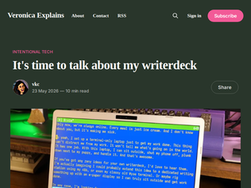
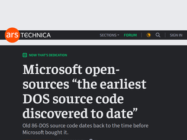
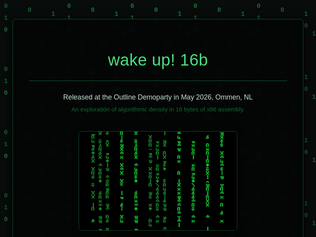
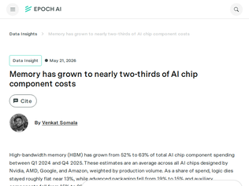
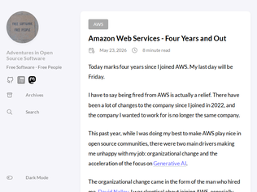

"I'm not sure you need a "DeepSeek native coding agent" to take advantage of DeepSeeks cache, yesterday as the Codex quota usage issue still wasn't solved for me, I wrote a tiny little bridge so I could use DeepSeek V4 Pro via Codex, and seems most of everything I did was basically cached as far as I can tell: https://i.imgur.com/7eKn6wN.png (2026-05-23 Input (Cache hit): 39,123,200 tokens, Input (Cache miss) 1,692,286), and the bridge is doing not special, just massage the DeepSeek API shape into what Codex expects, nothing particular about caching at all.Besides being even better at the caching, I'm not sure what benefits you'd get compared to just firing up OpenCode with the DeepSeek API yourself, it'll similarly do caching for sure and also "talks directly to api.deepseek.com" if that matters, and you'll get a much more mature harness."
"This website seems to have been generated by Codex - I asked Codex to create an HTML overview of a feature for my team and it made an overly produced monstrosity - complete with the same large stat boxes that were for the most part devoid of meaningful information - using the same font, colors, layout, hero section, etc. It was also terrible on mobile just like this is.In the end I had Claude produce a one-page html file that was 95% of the way there and it took minor editing to clearly explain the intent of the feature."
"As someone who has been writing harnesses for a year: the people at opencode etc aren't stupid, when they decide to break the prefix cache [usually partially] it's always because they've tested it and it gives better results overall.If you think that dsv4 behaves differently enough from the aggregate of other models, submit a PR with a patch to special case that to your harness of choice with evidence. Just blindly assuming "append only all the time because cache" is a waste of everyone's time."

"I also made a writerdeck! They are the best: https://cassidoo.co/post/micro-journal/"
"This is an awesome setup. I like it, good job.That said, I do think there's a bit of irony to solving your "paying attention to writing" problem by setting up your OS from scratch, choosing to swap out the default networking stack, installing a novel flavor of your preferred text editor because you're "trying to get to know it a bit more," customizing your battery readouts, tweaking the login sequence, and then, after all that effort to make sure you'd have the perfect environment for uninterrupted writing sessions, installing tmux so that you'll be able to do multiple things at a time."
"There's a pattern that I notice a lot on HN."To solve this problem, I engineered an entire system from scratch."Response: "That's a cool solution. But, isn't it a lot more work than this straightforward solution?" (the user is right - the complicated solution is massively more work than the straightforward one)Response: "Yes, but it's a cool project - it's OK to not be the most efficient all the time." (also right - there's nothing wrong with doing projects with zero utility just for the fun of it, and this one actually does have some use)It seems like there's a bifurcation of expectations.Some people want to do a project, and they take a thin justification as an excuse to do so.Other people really do want to solve a problem, but they get mired in perfectionism and overengineering, or aren't even aware of the simpler solution.Conflation between these two categories keeps many HN threads gainfully employed.(worth noting that for people in the latter category, pointing out "there's this simpler solution" can be incredibly helpful, because they simply might not know that it exists, or maybe they need a little bit of pushing to realize that they're overengineering things and that they got stuck in a place that they don't actually want to be in. this has been me, many many times)"

"It is rare that I say this but, thanks MS! Arguably just as, if not more, important is the BASIC that they wrote. That was what they actually wanted to do. DOS just got them the contract with IBM. For decades MS was really a developer tools company with a side biz of writing operating systems and other misc software. They also open sourced that BASIC code too [1].[1] https://opensource.microsoft.com/blog/2025/09/03/microsoft-o..."
"I cannot describe to you how jealous I am of the fact that back then writing a few thousand lines of assembly was what it took to launch a successful software company."
"Discussion, on the source, at the time (79 points, 24 days ago, 19 comments) https://news.ycombinator.com/item?id=47957494Or on the GitHub clone (162 points, 15 comments) https://news.ycombinator.com/item?id=47946813"

"Discussion (209 points, 6 days ago, 34 comments) https://news.ycombinator.com/item?id=48173962"
"This sent me on a one hour long rabbit hole that ended with two guys building a Sierpinski triangle with recursive PowerPoint presentationshttps://youtu.be/b-Fa6HtvGtQ?si=LpQszgA9_K-m3V3-"
"Some other time, I really thought that a 32 byte demo I saw is the limit of how small the binary can get and still look good.That other demo didn't even have sound.This is hell of a good work. A masterpiece to retire after. (or more realistically, chase it on other architectures)"
"> They take whatever job pays and spend decades fighting upstream.I suspect that this affects a lot of folks in tech. There's a lot of money to be made, so people get into it. They don't really like what they do, so it's always a chore. Their work often shows it, too.I'm retired. I don't have to write software, but I spend more time writing software (for free), than I did, for most of my career.I like the Integrity part, too. That seems to be something that's missing (from most vocations), these days. One of the reasons that I stuck with my last job for so long, was because the people I worked with, and for, had Integrity, and that's pretty important to me."
"One of my thoughts is that it's not easy for people to discover what they're truly good at.The reason is that if you're truly good at something, if you have a real talent for it, then it's easy for you to do it well from the start, so you rarely judge it or realize how good you are. Just as no one thinks they're good at their heartbeat and breathing. Because you have the talent to be good at them from the beginning, so you don't put in much effort to learn them, and therefore you don't realize how difficult they are.I think a real way to discover your strengths is not to reflect on what you do well, but on what makes you most frustrated when you see others doing it. It feels like an experienced driver watching a student drive and getting frustrated: Why can't you do such a simple action correctly? If you find yourself constantly wondering on something: why can't everyone just do this and it's so simple? You can remind yourself that that one might not be simple at all, but rather that you possess a genuine talent for it."
"> Barnum’s first rule: pick the work you’re built for, then aim to be the best at it.Edsger Dijkstra, in one of his letters, giving advice (IIRC) to a PhD student: "Do only what only you can do."Kind of funny to see one of the greatest computer scientists and one of the greatest public entertainers giving the same advice, but I guess that speaks strongly in its favor."

"An interesting implication of this is that AI inference and training has a path to a ~3x hardware cost reduction (and maybe ~2x total cost reduction) without any technical innovation whatsoever, we just need to wait for dram supply to meet demand (either by manufacturing scaling or just waiting for the current rate of manufacturing to fill the demand spike)."
"I bought 96GB of RAM a couple of years ago for ~$250. That same RAM now costs $1200!"
"Everything I read seems to suggest that RAM capacity is going to grow at 20-25% a year, which just doesn't seem good enough. Even in consumer use cases, phones and laptops would benefit greatly by double the amount of RAM. And then obviously, the AI need is gigantic.I don't see it going away. I mean, it may not grow as fast as now, but I don't see it growing away either. I get why the memory makers do not want to bankrupt themselves, but it feels like there's got to be some way to push that risk off onto model providers and other people in the ecosystem to allow us to grow ram capacity more like 50% per year."
"Impressive, congratulations for the nice work."
"looks at code, sees safety closures, function assignments, sequential var declarationAhh I see you are one of the old ways, of the lost knowledge :)I am very nostalgic for this style of development, even though I do not miss it in a team setting at all!Super cool app you’ve made!"
"So want something like this but where the tracks are in the cloud.I want to "check out" someone's drum loop and add a guitar riff. Check it into a branch.Someone else checks out the drum+guitar, adds a bass line. Checks in."Jamming" with other people is one of the most fun things. To the degree that you can "get close" on the web…RiffHub, anyone?"
"The official replies are addressing questions that nobody has asked. The main issue is why Linux support is being removed from the Basic tier while Windows is still allowed.To grow the ecosystem, AMD needs more people working on their hardware. Restricting Linux will only alienates students, hobbyists, and devs who want to adopt AMD tech.- From long term AMD user"
"I’ve spent several hundred thousand on Xilinx FPGAs yet they nickel and dime me for licenses. It’s not the cost that’s a problem—-it’s the hassle of making a PO for a license to set up new computers, set up CI, hiring new teammates, setting up for interns/students. Xilinx has continued to go downhill since their acquisition by AMD.. it used to feel like it was run by engineers who understood their customers, now it seems to be getting taken over by the MBA crowd who only understands pinching pennies and chiseling their own loyal customers"
"We've had good experiences with Lattice parts. Their software tools are free for all of their basic chips. They only charge for licensing when you use the higher end SKUs with SerDes. Example, you can use and develop on an ECP5 or Certus using their free license, but then you need a paid license to work on ECP5-5G or CertusPro chips.They're not perfect, but they're better to work with than Xilinx. Also, their datasheetd are better than Xilinx in my experience.Give Lattice a look for your next project."

"Over the last month I contacted Support for the first time in many years.This was for a question about how billing works.It went like this;1. Case created.2. Unassigned for seven days.3. Open real-time chat, talk for 25 or so minutes where I guide a first-line Indian chap who plainly doesn't know about the subject in hand and who is as we talk reading the AWS docs I've already read. At the end, just as I couldn't find an answer, he couldn't - which is good, he didn't try to give me the wrong answer - he escalates. That's fine - a lot of questions are simple and even silly, and first line support is there to handle them - but they could have done all this without me, if they'd opened the ticket themselves rather than me having to chase.4. Eleven days later, comes back with exactly the wrong answer. In the meantime, I had figured out the correct answer, and reply, explaining it to him.5. Next day, I get a wall of plainly AI generated text telling me my answer is correct.It seems to me a key issue here relating to AI generated text, is a misunderstanding on the part of AWS that I as a consumer will value that answer exactly (or indeed, even remotely) as I would value the answer from a human.I do not. I almost ignore AI generated text, as I think it as unvalidated response."
"I used to see AI generated images with lots of unintelligible writing or misspelled words in slides, but the speaker left them in anyway. “Good enough” is not customer obsession.This enforced adoption of immature GenAI reminds me of Milo Minderbinder trying to make people eat cotton in Catch 22, because he had inadvertently obtained a huge amount of it."
"I'm also an AWS alumni from many years back now, and truthfully, the organizational problems really took off when Jassy moved to being CEO of amazon as a whole and major leaders left the company (Charlie Bell, et al.).There were always other problems too, pressure on the company in both directions across many different product lines on both cost (any number of cheaper baremetal providers who are much faster at providing customers instances than they were a decade ago), and product quality (any number of startups to now bigger companies, databricks probably being the biggest success) along with a number of expensive bets that were made that didn't work out especially as interest rates began to rise (there were numbers of of different services ranging from IoT, AI, business support, robotics, groundstation, that essentially all failed).AI infra being their latest bet, along with doubling down on custom hardware is smart, but these roles don't require the same number of SWEs and instead require a different type of high skilled professional."
"> the once-responsive Oura has not yet replied to any of my inquiries, or committed to releasing the numbersIllinois has a tight biometric-privacy law [1]. I’d bet Oura isn’t particularly careful about prohibiting e.g. a Texas police department querying the protected information of Illinois residents.[1] https://en.wikipedia.org/wiki/Biometric_Information_Privacy_..."
""In my previous blog, I revealed that Oura data is not end-to-end encrypted. That means that an Oura user's health data can be unscrambled at certain points as it travels from a person's ring, through their phone app, over the internet, and as it lands on Oura's servers."Very strange -- it seems to be conflating end-to-end encryption with encryption-in-transit."
"All this said I'm more concerned about Automatic Content Recognition (ACR) on smartTV you buy in the store and never even realize it's phoning home with everything you watch..."
DeepSeek reasonix, DeepSeek native coding agent with high caching and low cost
"I'm not sure you need a "DeepSeek native coding agent" to take advantage of DeepSeeks cache, yesterday as the Codex quota usage issue still wasn't solved for me, I wrote a tiny little bridge so I could use DeepSeek V4 Pro via Codex, and seems most of everything I did was basically cached as far as I can tell: https://i.imgur.com/7eKn6wN.png (2026-05-23 Input (Cache hit): 39,123,200 tokens, Input (Cache miss) 1,692,286), and the bridge is doing not special, just massage the DeepSeek API shape into what Codex expects, nothing particular about caching at all.Besides being even better at the caching, I'm not sure what benefits you'd get compared to just firing up OpenCode with the DeepSeek API yourself, it'll similarly do caching for sure and also "talks directly to api.deepseek.com" if that matters, and you'll get a much more mature harness."
"This website seems to have been generated by Codex - I asked Codex to create an HTML overview of a feature for my team and it made an overly produced monstrosity - complete with the same large stat boxes that were for the most part devoid of meaningful information - using the same font, colors, layout, hero section, etc. It was also terrible on mobile just like this is.In the end I had Claude produce a one-page html file that was 95% of the way there and it took minor editing to clearly explain the intent of the feature."
"As someone who has been writing harnesses for a year: the people at opencode etc aren't stupid, when they decide to break the prefix cache [usually partially] it's always because they've tested it and it gives better results overall.If you think that dsv4 behaves differently enough from the aggregate of other models, submit a PR with a patch to special case that to your harness of choice with evidence. Just blindly assuming "append only all the time because cache" is a waste of everyone's time."